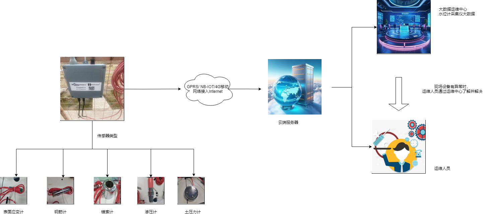
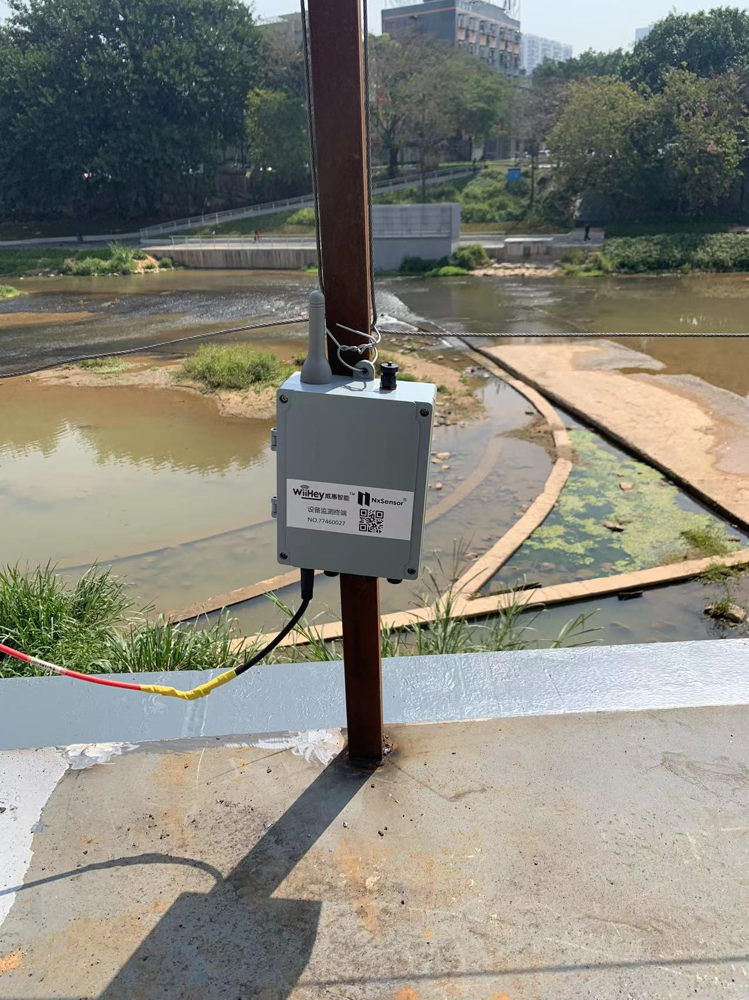
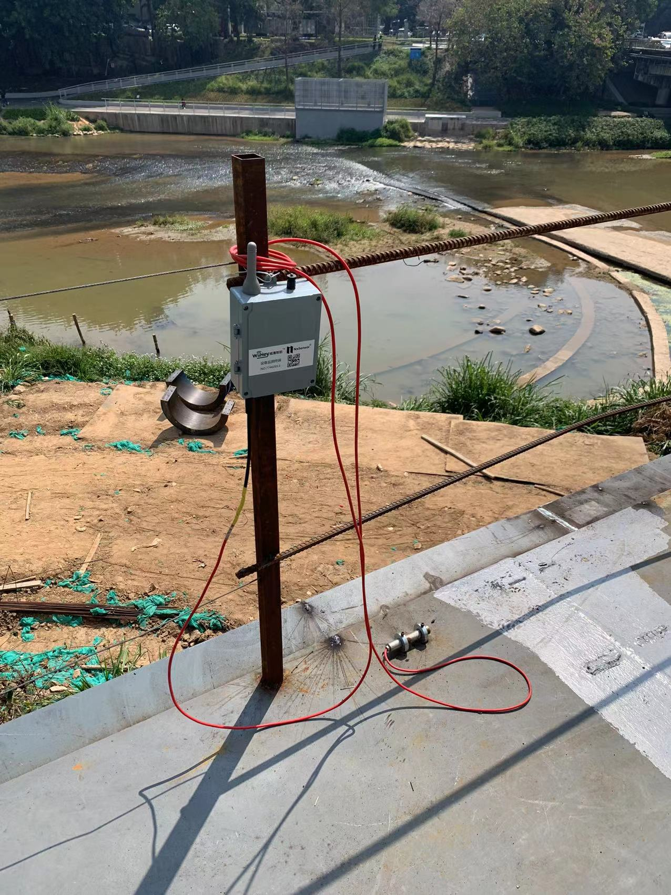

结构监测

概述
威惠智能数据采集仪，基于Bore OS物联网操作系统，内置长寿命锂亚电池，支持IP68防护等级，结合NB-IoT、4G CAT1、LoRaWAN、Bluetooth蓝牙等先进通讯技术，采用低功耗管理方式，能够实现多接口、多通道数据采集。数据可以在本地暂存或直接上传到云端。可实现地下窨井、基坑、高边坡、消防管路、水库坝体、给排水管网等场景的数据采集、存储、报警及传输等综合功能。
本产品适用于不具备供电条件、环境恶劣的监测现场，可实现地下窨井、基坑、高边坡、消防管路、水库坝体、给排水管网等场景的数据采集、存储、报警及传输等综合功能。
本产品可收集大范围区域内的众多监测点实时数据，如供水管网压力、流量、地下水位、大坝液位、沉降位移、气象环境、温湿度、空气质量、水质监测、消防管网监测等，尤其适用于井下恶劣环境的监测应用。
产品的优势与功能
- 防尘、防水；
- 超低功耗设计，长寿命电池供电，具备上传供电电池电压的功能
- 多通道采集仪能够采集多个通道的数据，适用于振动、压力等多种传感器的数据采集；
- 支持远程配置联网IP和端口号；
- 支持配接电信平台，移动平台，联通平台，直推客户平台等多种接入方式；
- 多通道采集仪确保仪器的稳定运行和数据的可靠性；
安装方式
1) 安装方式:
(1)天线朝上、垂直安装
(2)连接传感器线缆与采集器接口，将线缆的一端插入到接口中，确保插入深度适
当，线缆与接口之间的连接稳固
(3)在后台查看多通道采集仪监测数据，确定工作正常
2) 注意事项：
1.垂直放置：智能采集仪要垂直放置，以确保数据采集更加稳定。
2.避免高处安装：避免将数据采集仪安装在高处，以防坠落造成人身伤害。
系统拓扑结构
界面一览

总结
结合实际应用证明，威惠智能的结构监测技术，可以尽早的发现故障征兆，提供准确的维护建议，能够很好的进行结构监测状态监测和故障诊断。
技术规格
| 参数名称 | 内容 | |
|---|---|---|
| 型号 | 物联数据采集仪WH-MDAQ-NB-51 | |
| 电池 | 标称电压 | 3.6V DC |
| 极限工作电压 | 2.8V DC | |
| 电池容量 | 不低于38000mAH | |
| 整机功耗 | 休眠电流 | ≤15uA |
| 最大功耗 | ≤2W@3.6V | |
| 工作年限 | ≥3年（通讯良好，1天1次自检） | |
| 通讯接口 | 不无线通信 | 可选择4\8\16\32通道 |
| 传感器接口 | 通道数 | NB-IoT（B3/B5/B8全网通）/4G Cat1/LoRa |
| 测量功能 | 可支持传感器类型 | 液体：水压、渗压、流量，水质（ PH、 电导率、溶解氧、浊度）等485接口传感器 固体（振弦式）：钢筋计、轴力计、土压力 计、应变计、裂缝计、位移计等485接口、振 弦式传感器 |
| 电池电压 | 测量范围为2.8-3.6V，误差为±0.2V | |
| 指示功能 | LED灯 | 在设备内部，代表运行或联网的情况 |
| 外观和尺寸 | 尺寸 | 尺寸180*140*60mm |
| 材质及抗压 | 材质为PC能承受20kg/cm2以内的压力冲击 | |
| 安装 | 螺栓固定 | |
| 防护 | 防护等级IP68，防潮，防凝露 | |
| 指标名称 | 详细参数 | |
|---|---|---|
| 工作温度（℃） | -20℃~70℃ | |
| 贮存温度（℃） | -40℃~70℃ | 工作湿度 | 5%~100% |
| 大气压kpa | 63.0~106.0（海拔4000m及以下） | |
| 通信响应时间 | <30s |
| 平均无故障时间 | ≥30000小时 | 报警数据误报率 | ≤0.1% |
| 报警数据漏报率 | ≤0.1% |
| 电磁兼容性 | 符合IEC 61000-4-2、3、4、5 |
| 常态下绝缘电阻 | ≥100MΩ |
| 湿热下绝缘电阻 | ≥2MΩ |
| 泄漏电流 | ＜5mA |
现场案例
案例1
客户说：“威惠智能的产品，一方面解决了以前人力巡检不能及时发现设备异常的问题，另一方面，减少了人员前往结构巡检的安全隐患，让企业受益匪浅。”

案例2
